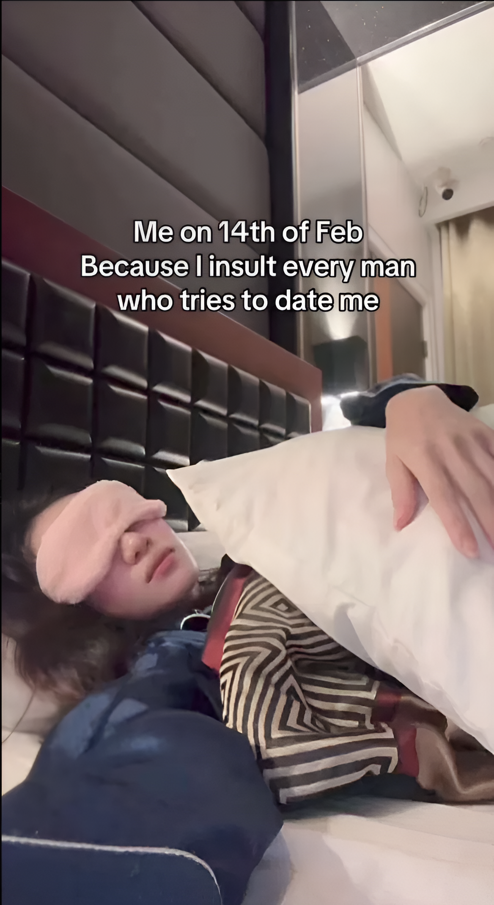
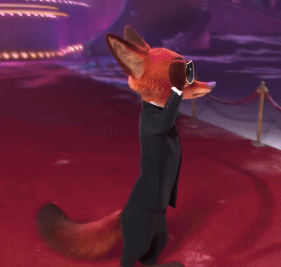
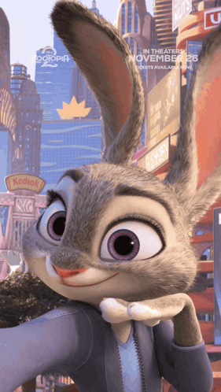
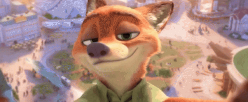

Remember this? This is something you sent me before, when you said you were pushing everyone away.
I don’t think that’s what it is. I think you’re just filtering the people who aren’t worth it.
The ones who lack confidence. The intelligence. The kind that don’t really know your worth.
The ones who couldn’t keep up with your pace, or the same level of smartness.
People who aren’t honest with themselves, who don’t speak clearly about their true intentions,
and aren’t confident enough to stand by them.

hello hello 🙂
i represent you
myself
all of that and more
would you handle it?
I know you might be wondering where all of this is coming from, so let me tell you the story of how this idea was born.
I did visit the beach the next day, after our talk as you my psy recommended. I walked along the shore and even did some running, but my mind kept overthinking, as it tends to. At some point, I decided to just sit down.
And then an idea hit me. A crazy one, of course. You know me already.
Honestly, I wanted to swim, to dive as deep as I could. But I didn’t. It wasn’t because the water was cold. It was more about not having a place to leave my clothes. Trust me, I would have.
But in that moment, I thought of you. I smiled.
I remembered you telling me to go to the beach with someone you care about and trust. Not to talk, just to be there together.
I couldn’t help imagining you beside me—your hands in mine. I remembered every time you showed me your cute nails, and suddenly all I wanted was to hold them.
I never really thought of the beach as something special before. But because of you, it was.
And then I remembered a question you asked me:
“Why are you doing all of this? We’re not in a relationship.”
For the first time, I just sat there and I didn’t overthink it. The question itself was enough. Just being there, floating with the moment.
I wasn’t looking for an answer.
I started remembering moments. Random ones. Of you. Of us. Of your stubbornness. Of your cuteness.
I remembered times when I thought of you even while we weren’t even talking, and I thought about why I always wanted to be so helpful to you, to be there with you.
I thought of my favorite reel that you once sent me, one that I don’t think you even remember, but for me it meant the world:
“HUG ME UNTIL I SMELL LIKE YOU.”
That line has made me smile more times than I can count.
I remembered the day I made you sick because we talked until a late hour.
I remembered the day I was incredibly grateful to your grandma, because thanks to her being there we could talk on a call. She couldn’t have made me any happier.
I remembered us talking about our childhood memories.
I also remembered the day you were talking about building a website for your prof, and I remembered saying, if you want, I can help. If you’re busy with other presentations, I’m down to help.
At the time, I didn’t even know if it was feasible to create a website. I had never done it before. But I wanted to learn it just for you.
And then I smiled and said to myself: you know, Outman, I probably wouldn’t have been that excited to do it for my own presentation lazy me. I would have found the easiest way out for the prof. But for her, I made sure it would be the best I could do, learning something new just for her, something I normally wouldn’t care about.
And then my one and only question was answered:
Why?
Because I want to.
I expected nothing back. It was a genuine feeling, one I had never experienced before. One that made me just sit there, listening to music and chilling. I felt comfortable, relaxed, free.
I remembered a line you once said: “This is life, it has highs and lows.”
And somehow I wanted to say that I care more about your lows. I want to be there for you in your lows, and I want you to be with me in my highs. Why? Because that’s what I want.
So I decided to build this website. First, to know for sure if I was bluffing when I said I would build it for you haha, I wasn’t. I’m impressed I could do it within a day.
And second, to do something special simply because I felt like it.
I wasn’t expecting to write a text like this. I had been planning a quiz and some challenges something light, not too expressive, themed around the fox and bunny. But it ended up like this, because this is the truest way I can honestly express my feelings, without hiding behind a game. It felt real.
Usually, Valentine gifts end with a question: “Will you be my Valentine?”
I had planned to say, “Will you be my mogayo to this bogayo?”
But I don’t want to do that anymore, because i’m sure you have questions, but I’ll let you answer them the same way I did by yourself.
Im doing this while i do not expect anything back i have never been more confident to say that i wanted to do it to make u smile the same way you have made me smile.


i just wanted to add those two gifs because i did find them cute